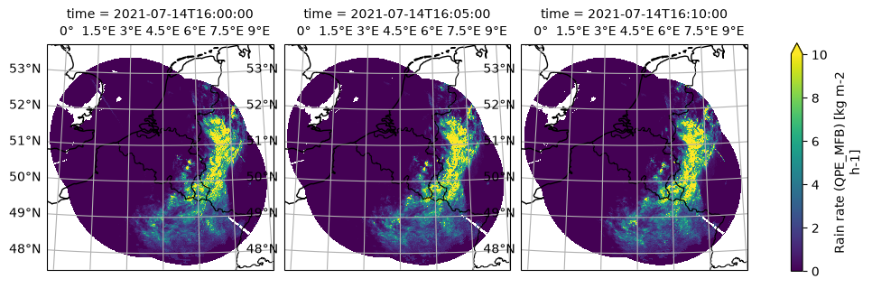

BE RMI - RADCLIM: Radar–Rain-Gauge Merged Precipitation over Belgium#
This notebook describes how to access and use the zarr-version of the BE RADCLIM 1 km Composite Rainfall dataset, produced by the Royal Meteorological Institute of Belgium (RMI). RADCLIM is an offline, reprocessed quantitative precipitation dataset designed for climatological analysis, filling in gaps that occurred in the real-time RADQPE product.
The dataset provides 1 km gridded precipitation accumulations on a 700x700 grid over Belgium and the surrounding area (0.3°W–9.7°E, 47.4–53.7°N) at 5-minute rain-rate (mm/h)
Precipitation fields are derived from a network of four C-band (partially dual-polarisation) weather radars (Jabbeke, Wideumont, Helchteren, Avenois) covering the Belgian territory. For this product, radar estimates are merged with rain-gauge observations from automatic weather stations of multiple Belgian networks (excluding climatological stations) using mean-field bias (MFB) correction.
The v0.1.1 zarr version of the dataset covers 2017-01-01 to 2023-11-30 (archive period). It is projected in the Belgian Lambert 2008 coordinate reference system (EPSG:3812).
License: CC BY 4.0
import matplotlib.pyplot as plt
import mlcast_datasets
# Open the mlcast datasets intake catalog and list available precipitation datasets
cat = mlcast_datasets.open_catalog()
list(cat.precipitation)
['radklim_hourly',
'radklim_5_minutes',
'dmi_10_minutes',
'it_dpc_sri_5min',
'uk_metoffice_5min',
'be_rmi_radclim_mfb_5min',
'fr_mf_prate_5min']
5-minute radar-rain-gauge merged rain rate#
The RADCLIM 5-minute rain-rate product with mean-field bias (MFB) correction is available in the intake catalog as be_rmi_radclim_mfb_5min.
# Load the RADCLIM 5-minute rain-rate dataset lazily via Dask
ds = cat.precipitation.be_rmi_radclim_mfb_5min.to_dask()
ds
<xarray.Dataset> Size: 1TB
Dimensions: (time: 726332, y: 700, x: 700, missing_times: 868)
Coordinates:
* time (time) datetime64[ns] 6MB 2017-01-01 ... 2023-11-30T23:55:00
* y (y) float64 6kB 9.995e+05 9.985e+05 ... 3.015e+05 3.005e+05
* x (x) float64 6kB 3.005e+05 3.015e+05 ... 9.985e+05 9.995e+05
lat (y, x) float64 4MB dask.array<chunksize=(700, 700), meta=np.ndarray>
lon (y, x) float64 4MB dask.array<chunksize=(700, 700), meta=np.ndarray>
* missing_times (missing_times) datetime64[ns] 7kB 2018-11-30T13:20:00 ......
spatial_ref int64 8B ...
Data variables:
rain_rate (time, y, x) float32 1TB dask.array<chunksize=(1, 700, 700), meta=np.ndarray>
Attributes:
Conventions: CF-1.10
license: CC-BY-4.0
institute: Royal Meteorological Institute of Belgium
contact: Maryna Lukach <rad_op@meteo.be>
mlcast_created_on: 2026-03-27T15:24:18.195842+00:00
mlcast_created_by: Simon De Kock, Lesley De Cruz <simon.de.kock@...
mlcast_created_with: https://github.com/mlcast-community/mlcast-da...
mlcast_dataset_version: 0.1.1
mlcast_dataset_identifier: BE-radclim_mfb-rain_rate
consistent_timestep_start: 2017-01-01T00:00:00import cartopy.crs as ccrs
import cartopy.feature as cfeature
from pyproj import CRS
var_name = "rain_rate"
crs_name = ds[var_name].grid_mapping
data_crs = ccrs.Projection(ds[crs_name].crs_wkt)
# Plot three consecutive 5-minute timesteps for a selected date
# The mid-July 2021 event was a historically severe flooding event over Belgium
# (see Journée et al., 2023 in the References section below)
g = (
ds[var_name]
.sel(time="2021-07-14T16")
.isel(time=slice(None, 3))
.plot(
transform=data_crs,
cmap="viridis",
add_colorbar=True,
col="time",
robust=True,
subplot_kws=dict(projection=data_crs),
vmin=0,
)
)
for ax in g.axes.flat:
ax.coastlines()
ax.add_feature(cfeature.BORDERS, linewidth=0.8, edgecolor="black")
ax.gridlines(draw_labels=["top", "left"])
/tmp/ipykernel_2418/2885551012.py:19: FutureWarning: self.axes is deprecated since 2022.11 in order to align with matplotlibs plt.subplots, use self.axs instead.
for ax in g.axes.flat:
/home/runner/work/mlcast-datasets/mlcast-datasets/.venv/lib/python3.12/site-packages/cartopy/io/__init__.py:242: DownloadWarning: Downloading: https://naturalearth.s3.amazonaws.com/10m_physical/ne_10m_coastline.zip
warnings.warn(f'Downloading: {url}', DownloadWarning)
/home/runner/work/mlcast-datasets/mlcast-datasets/.venv/lib/python3.12/site-packages/cartopy/io/__init__.py:242: DownloadWarning: Downloading: https://naturalearth.s3.amazonaws.com/10m_cultural/ne_10m_admin_0_boundary_lines_land.zip
warnings.warn(f'Downloading: {url}', DownloadWarning)

📚 References & Further Reading#
The RADCLIM dataset is based on the RADQPE methodology. The following publications describe the underlying algorithms and a notable application of the dataset:
Goudenhoofdt, E. and Delobbe, L. (2016), “Generation and Verification of Rainfall Estimates from 10-Yr Volumetric Weather Radar Measurements”, Journal of Hydrometeorology, Vol. 17, Issue 4, pp. 1223–1242. → https://doi.org/10.1175/JHM-D-15-0166.1
Journée, M., Goudenhoofdt, E., Vannitsem, S. and Delobbe, L. (2023), “Quantitative rainfall analysis of the 2021 mid-July flood event in Belgium”, Hydrology and Earth System Sciences, Vol. 27, Issue 17, pp. 3169–3189. → https://doi.org/10.5194/hess-27-3169-2023
📬 Maintainer: Royal Meteorological Institute of Belgium (RMI)
🔑 License: CC BY 4.0
📥 More information and documentation: RMI Opendata Server
⚠️ Use Limitation: This is a pre-release and can contain errors.